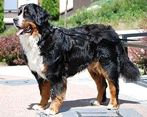

Berninpaimenkoira (saks. Berner Sennenhund, ransk. bouvier bernois, ital. bovaro del bernese) on kolmivärinen, pitkäkarvainen ja suuri koirarotu. Se on saanut nimensä Bernin kantonin mukaan. Berninpaimenkoira on sveitsinpaimenkoirista yleisin. Luonteeltaan se on varma ja hyväntahtoinen, omistajaansa syvästi kiintyvä koira. Alkuaan berninpaimenkoira toimi vahti-, veto- ja karjanajokoirana maatiloilla. Nykyään se on mainio seurakoira ja monipuolinen harrastus- ja työkoira.
Berninpaimenkoiran tulee olla rungoltaan voimakas ja tiivis. Säkäkorkeus on uroksilla 64–70 cm ja nartuilla 58–66 cm. Berninpaimenkoira on kolmivärinen, keskikokoa suurempi, liikkuva käyttökoira. Rakenteeltaan koiran tulisi olla sopusuhtainen sekä tasapainoinen. Pääväriltään berninpaimenkoiran tulee olla musta, jossa on punaruskeita ja valkoisia merkkejä. Valkoisia merkkejä saa olla päässä, käpälissä, rinnassa ja hännänpäässä. Lisäksi koiralla on punaruskeat merkit raajoissa, rinnassa, poskissa ja täplät silmien yläpuolella. Rotumääritelmä määrittelee varsin tarkasti sallitut merkit.
Koiran turkki on pitkä, pehmeä ja joko suora tai hieman aaltoileva. Berninpaimenkoiran raajat ovat vahvat. Sen ruskeat silmät ovat mantelinmuotoiset. Häntä on tuuhea, ja koira kantaa sitä liikkuessaan selkälinjan tasolla. Levossa häntä on riippuva. Bernien jalat ovat noin 30–50 cm ja tassut ovat suurehkot. (Lähde: HANKIKOIRA.FI)